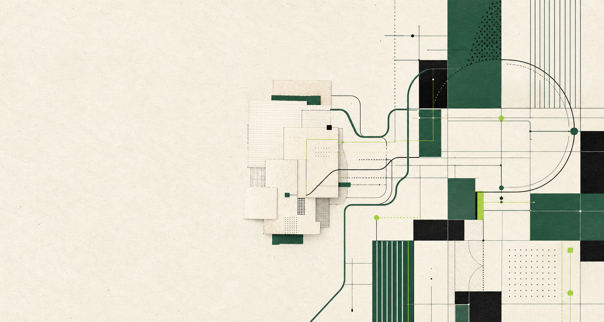
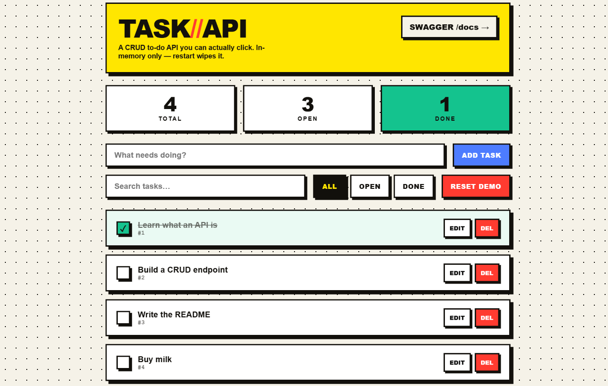
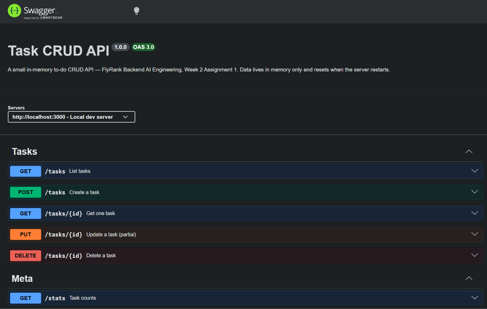
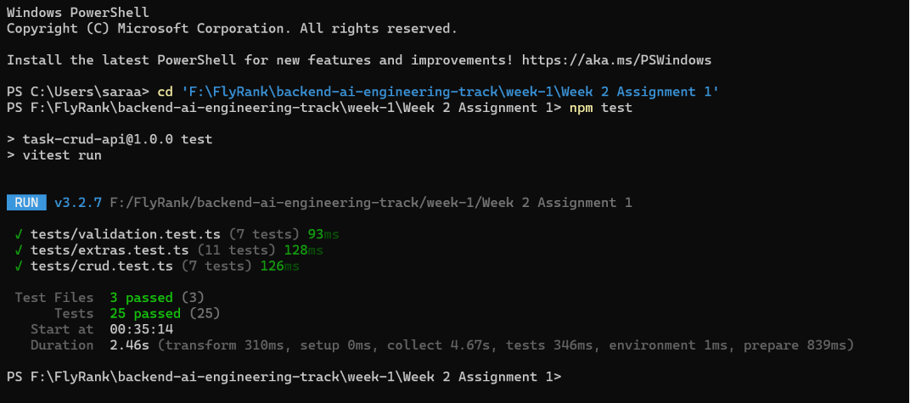
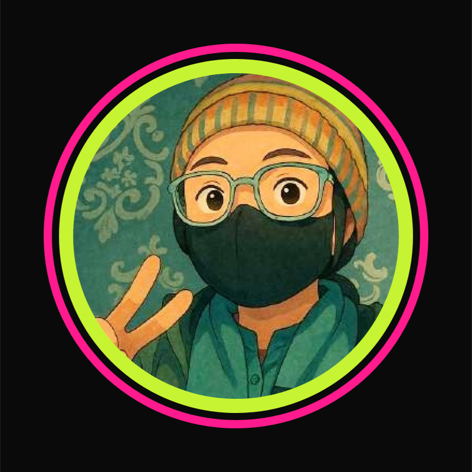
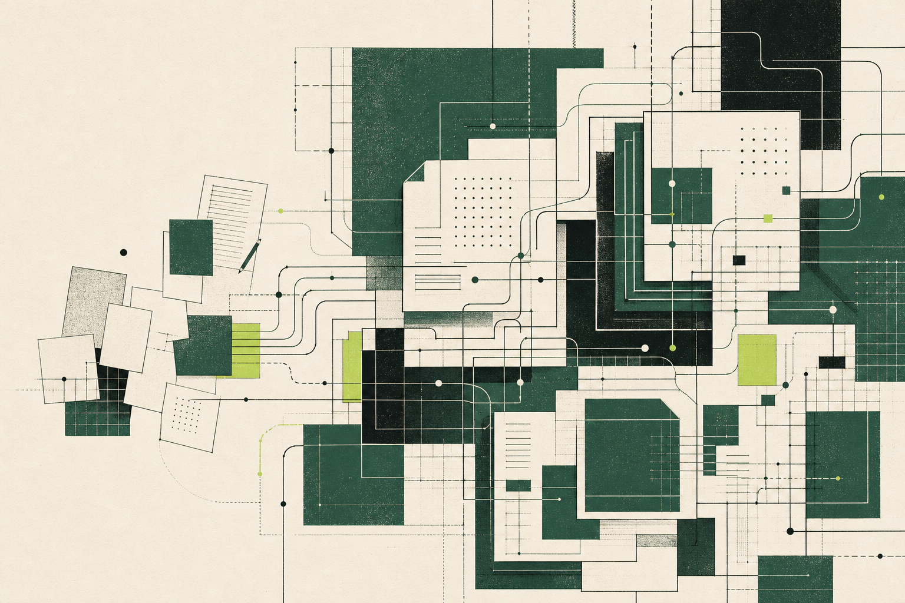

Customer Trends · dashboard
Keep as the project lead. Filters, measures, and category comparisons are readable at card size.

Real work gets real captures. I use AI only for connective tissue, never to manufacture evidence of a system I built.
A slot exists only when it helps the operations manager believe the proof, understand the work, or know who built it.
| Portfolio need | Final image call | Why | Status |
|---|---|---|---|
| Hero | One generated systems texture | Atmosphere only; it claims no product outcome. | Keeper |
| DG Cement proof | Real attendance, offline state, and payroll captures | This is the paid proof. An AI stand-in would weaken the claim. | Capture required |
| Inventory system | Real POS + low-stock screen | The existing polished desktop mockup is not enough to prove the build. | Capture required |
| Customer Trends ETL | Real dashboard capture | Shows the actual analysis result without inventing a business outcome. | Keeper |
| Expense tracker | Real portfolio screen composite | Shows multiple working app states and Sara’s own-user context. | Keeper |
| Sales dashboard | Real Global Superstore capture | Streamlit navigation and metrics remain legible. | Keeper |
| AURA + DataSage | Real product capture for each | DataSage is verified; AURA’s current generic chat visual is not sufficient. | 1 keep · 1 needed |
| The AI Core | Real UI, Swagger, and test captures | Existing verified evidence of UI, API surface, and tests. | 3 keepers |
| How I work / scope builder | No image | Process copy and interaction do the job; icons would be decoration. | Deliberate none |
| Sara / contact | Real portrait | A generated person would break trust at the final ask. | Keeper |
These files already exist in the workspace and are preserved as real evidence. Final portfolio crops should keep labels and outcomes readable.
Keep as the project lead. Filters, measures, and category comparisons are readable at card size.
Keep the existing screen composite. It shows balance, transactions, statistics, search, and profile in one coherent frame.

Keep the actual app capture. Navigation, headline metrics, author credit, and framework context remain visible.

Keep as proof of the working application shell. Use a result-state capture later inside the expanded case if available.

Use as the lead capture. It shows an actual interaction, not an architecture promise.

Crop to the relevant endpoints. Supporting evidence, not the card thumbnail.

Use beside the 51-test claim only when the count remains legible.

Real photo only. Crop once for contact/about use; do not create an AI “professional portrait.”
Both options use the identity palette and the same screen-printed systems language. Consistency alone does not make an image useful.
The left-side negative space carries the headline cleanly. Paper fragments and structured paths support “replace paper” without pretending to show a real product.

I rejected this even though it is polished and on-brand. Its dense cards and crossing lines compete with the claim, read as generic “complex AI,” and make the portfolio look busier than the field software it is meant to frame.
The new portfolio export closes four gaps. Three proof gaps remain, and the decorative asset pile stays out of the final set.
If the image is evidence of my work, it must come from the work. If the image is me, it must come from a camera. AI may frame the story; it may not fabricate the proof.